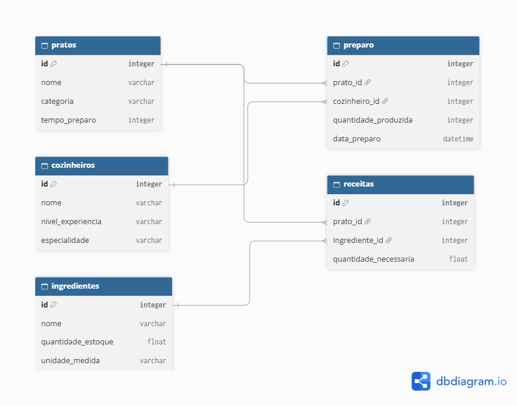
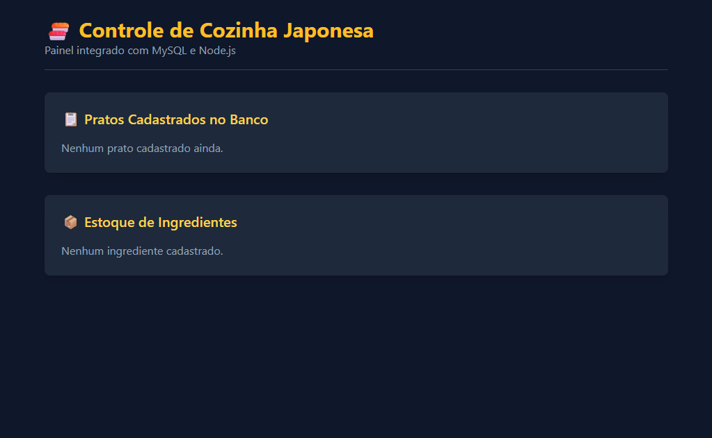

Sistema de Controle de Estoque para Restaurante (Cozinha Japonesa)
Uma solução estruturada do zero para resolver um dos maiores gargalos operacionais no setor de gastronomia: o desperdício de insumos, a falta de rastreabilidade e a desatualização de inventário em tempo real.
01. A Planta Baixa dos Dados (Modelagem Relacional DER / MER)
Antes de escrever qualquer linha de código de programação, o projeto exigiu uma arquitetura rigorosa de banco de dados. O diagrama abaixo demonstra o mapeamento lógico e conceitual que garante que nenhuma informação fique solta ou duplicada. Cada tabela cumpre um papel crítico no ecossistema da cozinha.

[ Arquitetura relacional interligando Pratos, Cozinheiros, Ingredientes, Receitas e Histórico de Preparo ]
02. O Painel de Controle Operacional (Interface & Integração)
A interface foi desenhada para ser limpa, objetiva e funcional. O painel interage de forma síncrona com o servidor, permitindo que a equipe visualize instantaneamente os pratos disponíveis no cardápio e o status atual do estoque de cada ingrediente base.

[ Painel web integrado via Node.js e MySQL para monitoramento de pratos e inventário de insumos ]
03 O Problema Real e a Solução Aplicada
Em restaurantes de culinária japonesa, a precisão no manuseio de ingredientes frescos (como peixes nobres e vegetais específicos) é vital. Sem um sistema centralizado, os estabelecimentos sofrem com perdas financeiras por desperdício ou falta de insumos no meio do expediente.
Este software foi construído para atuar como o cérebro logístico da cozinha. Através dele, cada prato cadastrado está diretamente vinculado à sua ficha técnica (receita). Quando um prato é produzido, o sistema sabe exatamente quais ingredientes e em que quantidades foram consumidos do estoque geral.
Além disso, o registro de quem preparou o prato (cozinheiros) garante total responsabilidade operacional e histórico auditável dentro do restaurante.
A Estrutura do Banco de Dados
O coração deste projeto é a modelagem relacional. Utilizando MySQL e SQL, criei tabelas perfeitamente normalizadas que conversam entre si através de chaves primárias e estrangeiras:
- Pratos & Ingredientes: Catálogo base de produtos e insumos.
- Cozinheiros: Registros da equipe e níveis de experiência.
- Receitas: Ficha técnica que calcula os insumos por prato.
- Preparo: Histórico transacional que audita a produção diária.
A Tecnologia por Trás (Back-End)
Para dar vida ao banco de dados e exibi-lo na web, estruturei a aplicação utilizando tecnologias modernas e focadas em desempenho:
- Node.js & Express: Servidor e rotas organizadas de comunicação.
- Conexão Persistente: Estabilidade nas consultas (queries DDL/DML).
- Código Limpo: Organização modular para futuras expansões.